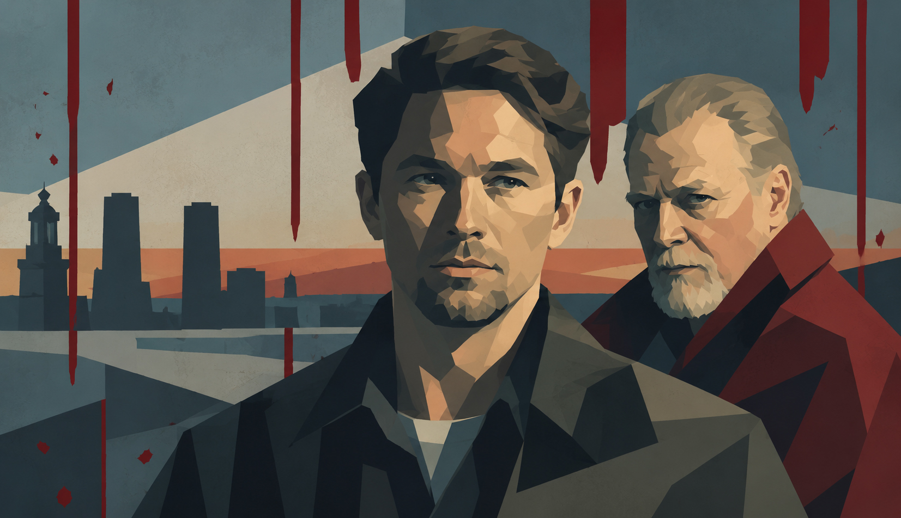

Netflix・Apple TV+・Prime Videoで8月から9月にかけて配信が始まった作品や新シーズンから、管理人が気になっている7本を取り上げました。視聴済みの作品については実際の感想を、そうでないものは公式情報をもとに注目している理由を書いています。
DRAMA RADARの「話題作・新作情報」には未視聴作品も含まれます。掲載作品がすべて視聴済みというわけではありませんので、あらかじめご了承ください。
01
Prime Video
ニーグリーNeagley
2026年9月16日 全話一挙配信
アクション・スリラー
全8話
どんな作品か
『リーチャー ～正義のアウトロー～』のスピンオフシリーズ。本編でジャック・リーチャーの元チームメンバーとして登場したフランシス・ニーグリーを主人公に、マリア・ステンが引き続き主演を務める。アラン・リッチソンがジャック・リーチャー役でゲスト出演。全8話が9月16日に一挙配信。
気になる理由
人気シリーズ『リーチャー』で脇役だったフランシス・ニーグリーを主人公にしたスピンオフが、独立した物語としてどう展開するか気になっている。主人公が変わることでシリーズとしてどう広がるか、という点にも興味がある。
Prime Videoで見る →
02
Apple TV+
窓際のスパイ シーズン6Slow Horses Season 6
2026年9月16日 配信開始（毎週水曜更新）
スパイ・スリラー
全6話（最終話 10月21日）
どんな作品か
ゲイリー・オールドマン主演のスパイスリラー。MI5の落ちこぼれチーム「スローホース」が活躍するシリーズで、ミック・ヘロンの小説シリーズを原作とする。シーズン6は原作第6巻・第7巻をベースに描かれ、9月16日から毎週水曜日に1話ずつ、全6話が配信される。
気になる理由
シーズンを重ねるごとに海外での評価が高まっていると言われる長寿スパイスリラー。ゲイリー・オールドマンが引き続き主演を務める第6シーズンで、新たにどんな事件が描かれるのか気になっている。
Apple TV+で見る →
★ PICK UP — 視聴済み・今回の推し
03
Netflix
ブラッド・サクリファイスBlodsoffer
2026年8月20日 配信開始
クライム・スリラー
全5話

あらすじ
舞台はスウェーデン。警官が凄惨な手口で殺害される事件が発生し、主人公の刑事は不本意ながら疎遠になっていた元敏腕刑事の父親に協力を仰ぐ。脚本は『Lupin/ルパン』や『ハイジャック』を手掛けたジョージ・ケイ。監督はクリストファー・ニホルム（全話）。Netflixオリジナル、全5話。
管理人レビュー
無駄がなく最後まで先の気になる展開が着実に訪れる、丁寧なストーリー。事件に絡め取られていく主人公たちなど、上質なサスペンスに必須の要素をしっかりまとめている。きれいで質の高いカメラワークや音楽も見やすく説得力があった。親子の軋轢、社会へのフラストレーションなど事件を通して考えさせられる重厚さもある。今回の7作品の中でも、まず観てほしい一本。
Netflixで見る →
04
Netflix
ジェントルメン シーズン2The Gentlemen Season 2
2026年9月3日 配信開始
クライム・コメディ
どんな作品か
ガイ・リッチー監督によるNetflixオリジナルドラマの第2シーズン。「公爵」ことエディ（テオ・ジェームズ）が大麻帝国の拡大を目論む中、今度はイタリアンマフィアが新たな脅威として立ちはだかる。
シリーズへの管理人コメント
ガイ・リッチー作品らしい独特の雰囲気、ケレン味があっておしゃれかつ突飛で派手な世界観。
Netflixで見る →
05
Apple TV+
ミッシング・ガールMissing Girl
2026年9月9日 配信開始（毎週水曜更新）
サスペンス
全6話
どんな作品か
英国推理作家協会（CWA）賞を受賞した小説を原作とする本格サスペンス。11年前に娘を失った警察指令員のイアンが、ある日かかってきた緊急通報をきっかけに執念の追跡を始める。パトリック・ブラモール主演。9月9日に第1・2話が同時配信され、以降は毎週水曜更新。
気になる理由
CWA賞受賞作が原作というのと、静かな執念を描く系統のサスペンスが好みということもあって、観てみたいと思っている一作。
Apple TV+で見る →
06
Apple TV+
ダーク・マター シーズン2Dark Matter Season 2
2026年8月28日 配信開始
SF・スリラー
どんな作品か
ブレイク・クラウチのベストセラー小説を原作とするSFスリラーの続編。ジョエル・エドガートン、ジェニファー・コネリーが引き続き主演を務め、原作者のブレイク・クラウチが脚本・製作も担当。マルチバースを軸にした前シーズンの続きが描かれる。
気になる理由
配信当時話題になったSFスリラーの続編。原作者自身が脚本を書き続けているシリーズで、シーズン2がどこへ向かうか気になっている。
Apple TV+で見る →
07
Netflix
百年の孤独: パート2One Hundred Years of Solitude: Part 2
2026年8月5日 配信開始
マジックリアリズム・ドラマ
全7話（最終話 8月26日）
どんな作品か
ノーベル文学賞作家ガブリエル・ガルシア＝マルケスの原作小説を映像化したNetflixオリジナルドラマの完結編。パート1から続くブエンディア一族の百年にわたる物語が全7話で幕を下ろす。近代化が進むマコンドの町を舞台に、愛・権力・欲望に翻弄される一族の運命が描かれる。
気になる理由
「映像化不可能」とも言われてきた世界文学の金字塔のドラマ化がどのように完結するか。映像化プロジェクト自体への関心もあって注目している。
Netflixで見る →